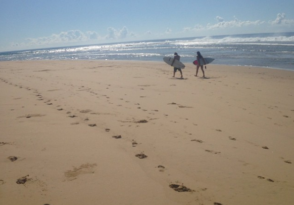
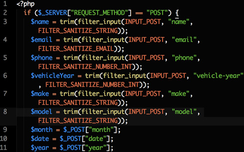

About Snide
Learn a little more about me here.
Learn a little more about me here.
Allow me to introduce myself. My name is Kevin Snider. I was born and raised in Canada but I have lived in Australia, South Africa with plans to live in a few more places. I have visited 6 continents and won't be happy till I visit all 7.
While living in South Africa I fell in love with surfing. It is the greatest feeling in the world. My dream is to live somewhere that allows me to surf everyday. If I could play ice hockey there as well that would be a nice bonus.
I have always been curious how web sites work and how they were coded. I would often find myself viewing the page source and trying to figure out how things work behind the scenes.
With my passion for traveling, I needed something that was flexible and mobile. Something I was passionate in and something that was in demand. Web design fits all those categories. I look forward to a long career in web development.